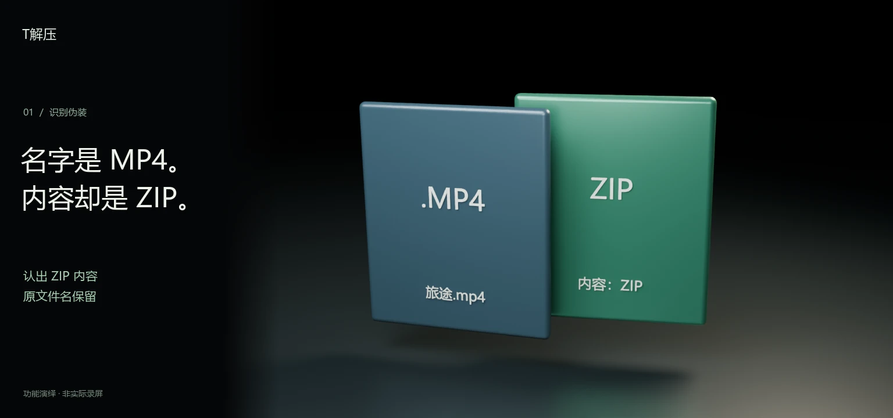

看内容，
不看后缀。
一个伪装成 MP4 的压缩包。
里面还有改名分卷、密码和嵌套。
看看 T解压怎样接着处理。Windows 原生 · 3.63 MB 便携包 · 免费开源

从伪装包，到你的文件。20 秒原创 3D 功能演绎
原创 3D 功能演绎，非软件录屏，片中节奏不代表实际耗时。同结构的生成样本已通过真实引擎解压；改名卷只在可唯一匹配时自动归组，有歧义会提示。回收须已开启，且没有后续任务仍需读取原包。
一批文件，
一处处理。
从拖入到找到结果。
重要的，是每一步都接得住。
- 01
先认出内容。
识别改名压缩包与受支持的前缀伪装。文件、文件夹都能拖入，也能手动加入；分卷缺失或有歧义时，给出明确提示。
- 02
再逐层解开。
复用你保存、导入或提供的密码，优先验证候选。理顺分卷，展开嵌套；遇到内层问题，可以单独准备重试，不重复解压外层。
- 03
让结果归位。
默认在原包旁输出，也可指定目录。已有同名内容使用新名称保留；直接定位结果与问题包。失败保留源包和已解内容。
中途有事，也接得住。完成当前项后暂停，或下次打开恢复队列。失败内层可独立准备重试，保留外层记录和已解内容。
查看完整使用说明下载
T解压。
默认：每个任务及其嵌套包全部解压成功后，原包移入回收站。可在开始前关闭回收选项；失败会保留原包。便携版免安装，密码本与工作台状态保存在当前 Windows 用户目录。
无需安装，三步开始。
- 01
展开下载的 ZIP。
保留文件夹内全部文件。 - 02
运行
T解压.exe。
无需 .NET、Python 或 WebView。 - 03
拖入待解文件，检查输出和选项。
点击“开始全部”。
首次下载与系统提示
此版本尚未进行数字签名，Windows 可能显示来源或信誉提示。请从本页的官方站点或 GitHub Release 下载，并用同页校验文件核对。若系统提示拦截，先核对来源与文件，不必关闭系统防护。当前仅提供 Windows x64 便携版。